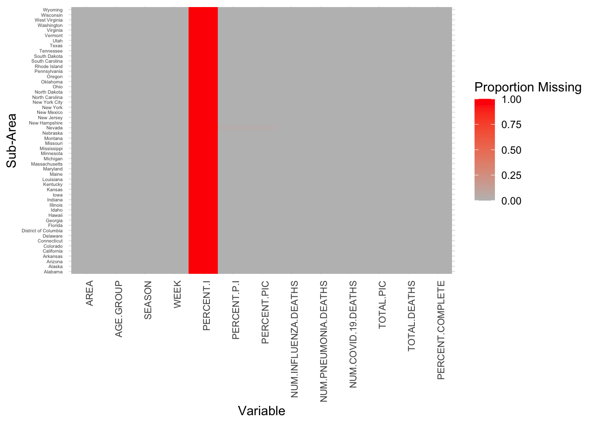
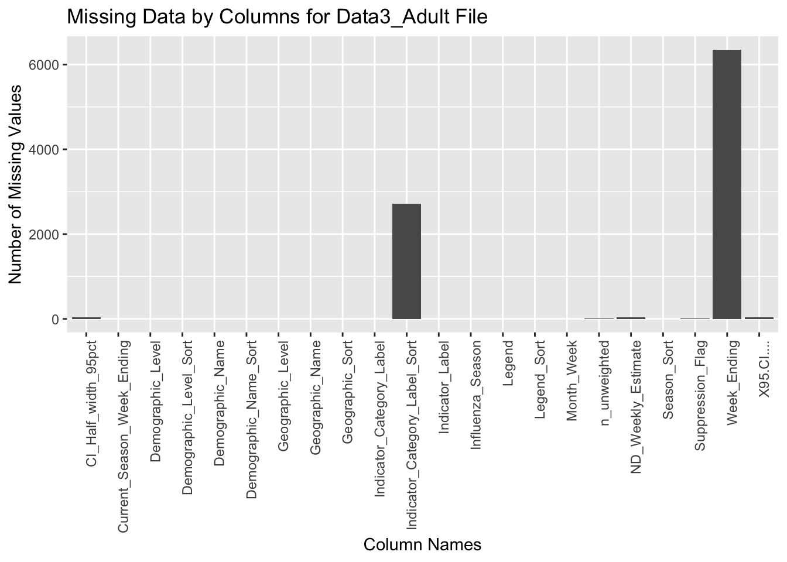
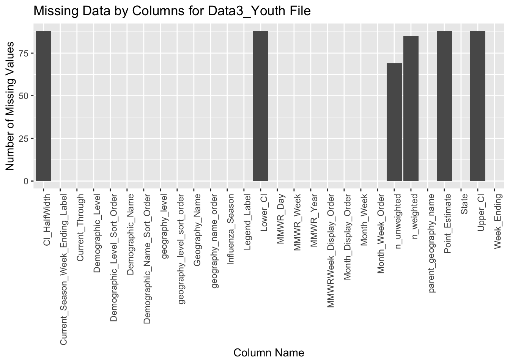

Code
library(dplyr)
library(ggplot2)
library(dplyr)
library(reshape2)
library(gridExtra)
library(stringr)
library(tidyverse)To find out whether there are any changes to disease casualties and other plausible factors that might also cause the changes, we collected several datasets from Centers for Disease Control and Prevention. Thanks to the easy access to the data by the Centers for Disease Control and Prevention, the datasets are all downloadable in csv file types. Thus, we first downloaded the data and then uploaded to the “data” folder in the working directory of the project for convenience of data cleaning, processing and visualizing.
Data Source 1: Pneumonia and Influenza Mortality Surveillance
The first one is “Pneumonia and Influenza Mortality Surveillance” from National Center for Health Statistics (NCHS) Mortality Surveillance System, a table of dimension 19345 by 14 when choosing state data. The data sources are collected by NCHS through State Vital Statistics Offices across the United States. The deaths which is confirmed through death certificate include multiple causes associated with influenza, pneumonia, or COVID. Because the data are collected weekly, they are updated and aggregated by weeks and will be displayed from 1 to 52 through a complete year. Note that the value total deaths include all the frequency based on ICD-10 multiple cause of death so it doesn’t equal to the sum of deaths from influenza, pneumonia and COVID-19 only.
Data Source 2: Weekly Provisional Counts of Deaths by State and Select Causes, 2020-2023
The second one is “Weekly Provisional Counts of Deaths by State and Select Causes, 2020-2023” by National Center for Health Statistics (NCHS), a table of dimension 10477 by 20. The data is collected by NCHS through the Vital Statistics Cooperative Program and updated as of September 27, 2023. The mortality data are based on the death certificates in all the states include counts of death by cause, week and state but they excludes the nonresidents and fetus. Notice that the provisional deaths are based on the flow of the mortality data in the National Vital Statistics System so there is a time lapse between the time deaths occur and the time to submit and eventually reflected on the system. Also, we need to be aware that the cause of the death classification is categorized by ICD-10 codes. So the total values of deaths is not equal to the sum of the listed deaths in other categories.
Data Source 3: Weekly Cumulative Influenza Vaccination Coverage-Youth;Adult
The final ones are “Weekly Cumulative Influenza Vaccination Coverage, Children 6 months through 18 years, United States” with dimension of 9895 by 28 and “Weekly Cumulative Influenza Vaccination Coverage, Adults 18 and Older United States” with dimension of 4836 by 22 from National Center for Immunization and Respiratory Diseases (NCIRD). The data are updated regularly throughout the flu seasons whenever new data are available. The influenza vaccination coverage is assessed through the National Immunization Survey - Adult COVID Module (NIS-ACM) providing weekly influenza vaccination coverage estimates. Notice that the weekly influenza surveillance report is prepared by the Influenza Division so the data are subject to the changes according the the reports received.
We first load the required libraries for loading, cleaning and processing data for all the datasets.
library(dplyr)
library(ggplot2)
library(dplyr)
library(reshape2)
library(gridExtra)
library(stringr)
library(tidyverse)Since all data sets are collected weekly, it is intuitive to merge the data across different sources and then group them by states or by weeks in general sense. We may clean and process data by keeping variables indicating weeks, states, ages, and deaths of influenza or/and pneumonia to demonstrate what are the changes before and after the COVID-19 outbreak. Depending on the graphs’ needs and availability of data, we could potentially extend the range of data from comparing year 2019 with year 2022 to a wider range of year such as from year 2018 to 2019 and with those from 2021 to 2023. With larger pool of the data points, it is more likely to show the effects of COVID-19 on the casualties of diseases of interest. A brief show of dataset 1 without any merging is as follows:
df1 = read.csv('data/data1.csv')
df1_filter = df1 %>% select('SUB.AREA','SEASON','AGE.GROUP','WEEK','NUM.INFLUENZA.DEATHS','NUM.PNEUMONIA.DEATHS','NUM.COVID.19.DEATHS','TOTAL.DEATHS')
colnames(df1_filter) <- c('state','season','age_group','week','influenza','pneumonia','covid','total')
head(df1_filter) state season age_group week influenza pneumonia covid total
1 Alabama 2023-24 All 40 0 37 18 961
2 Alabama 2023-24 All 41 0 60 19 987
3 Alabama 2023-24 All 42 0 43 12 927
4 Alabama 2023-24 All 43 1 46 6 897
5 Alabama 2023-24 All 44 1 40 16 825
6 Alabama 2023-24 All 45 0 31 10 607After examining the trends of specific diseases, it is reasonable to apply the same logic to other diseases of interest. However, instead of comparing before and after disease outbreak individually, we are comparing horizontally across different kinds of disease to show how the total deaths spread out in different categories using heatmaps of 10 including one with total casualties as a reference while each of rest is representing a category and its death frequency. A quick overview of our dataset 2 is:
df2 = read.csv('data/data2.csv')
df2_filter = df2 %>% select('MMWR.Year','MMWR.Week','All.Cause','Natural.Cause','Septicemia..A40.A41.','Malignant.neoplasms..C00.C97.','Diabetes.mellitus..E10.E14.','Alzheimer.disease..G30.','Influenza.and.pneumonia..J09.J18.','Chronic.lower.respiratory.diseases..J40.J47.','Other.diseases.of.respiratory.system..J00.J06.J30.J39.J67.J70.J98.','Nephritis..nephrotic.syndrome.and.nephrosis..N00.N07.N17.N19.N25.N27.','Symptoms..signs.and.abnormal.clinical.and.laboratory.findings..not.elsewhere.classified..R00.R99.','Diseases.of.heart..I00.I09.I11.I13.I20.I51.','Cerebrovascular.diseases..I60.I69.','COVID.19..U071..Multiple.Cause.of.Death.','COVID.19..U071..Underlying.Cause.of.Death.')
colnames(df2_filter) <- c('year','week','all_cause','natural','septicemia','neoplasms','miabete','alzheimer','influenza/pneumonia','lower_respiratory','other_respiratory','nephritis','abnormal','heart','cerebrovascular','covid_multiple','covid_underlying')
head(df2_filter) year week all_cause natural septicemia neoplasms miabete alzheimer
1 2020 1 60179 55010 843 11567 1829 2537
2 2020 2 60735 55755 861 11963 1942 2566
3 2020 3 59363 54516 829 11701 1819 2491
4 2020 4 59162 54401 828 11879 1864 2517
5 2020 5 58834 54001 811 11963 1828 2480
6 2020 6 59491 54416 806 11704 1957 2515
influenza/pneumonia lower_respiratory other_respiratory nephritis abnormal
1 1559 3501 1068 1094 630
2 1528 3708 1035 1092 649
3 1484 3526 992 1121 612
4 1488 3403 979 1107 638
5 1411 3313 981 1074 616
6 1463 3413 975 1135 600
heart cerebrovascular covid_multiple covid_underlying
1 14204 3110 0 0
2 13911 3189 1 1
3 13593 3256 2 1
4 13612 3185 3 2
5 13465 3084 0 0
6 14005 3056 4 3Although alert of the risks for assorted disease casualties is a good start, we still need some kinds to actions to combat or counteract with such situations. The most common solution to such challenges is through immunization. We would like to discover the correlation between vaccine coverage and deaths. According to our common sense and public education on vaccination, we would expect to have a negative relationship. However, it remains to be verified by a scatter plot of vaccination coverage versus casualties of different diseases grouped by states so we would have each point representing a state with a specific kind of disease. A brief show of our data for youth and adults are as shown below:
df3_youth = read.csv('data/data3_youth.csv')
df3_adult = read.csv('data/data3_adult.csv')
df3_youth_filter = df3_youth %>% select('Geography_Name','Demographic_Name','Month_Week','n_unweighted','n_weighted','Influenza_Season','Legend_Label') %>% filter(Geography_Name !='National')
df3_adult_filter = df3_adult %>% select('Geographic_Name','Demographic_Name','Month_Week','n_unweighted','Influenza_Season','Legend') %>% filter(Geographic_Name !='National') %>% filter(!str_detect(Geographic_Name,'Region'))
colnames(df3_youth_filter) <- c('state','age','week','unweighted_death','weighted_death','season','legend')
colnames(df3_adult_filter) <- c('state','age','month','unweighted_death','season','legend')
head(df3_youth_filter) state age week unweighted_death weighted_death season
1 Alabama Overall October Week 1 71 2042155 2019-2020
2 Alaska Overall October Week 1 75 468509 2019-2020
3 Arizona Overall October Week 1 42 3757133 2019-2020
4 Arkansas Overall October Week 1 12 272070 2019-2020
5 California Overall October Week 1 42 6702440 2019-2020
6 Colorado Overall October Week 1 42 1362564 2019-2020
legend
1 2019-2020, Alabama. Overall: Overall
2 2019-2020, Alaska. Overall: Overall
3 2019-2020, Arizona. Overall: Overall
4 2019-2020, Arkansas. Overall: Overall
5 2019-2020, California. Overall: Overall
6 2019-2020, Colorado. Overall: Overallhead(df3_adult_filter) state age month unweighted_death season
1 Virginia 18+ years November Week 3 622 2023-2024
2 Virginia 18+ years November Week 3 622 2023-2024
3 Virginia 18+ years November Week 3 4125 2023-2024
4 Virginia 18+ years November Week 3 4125 2023-2024
5 Washington 18+ years November Week 3 123 2023-2024
6 Washington 18+ years November Week 3 123 2023-2024
legend
1 2023-2024, Virginia, Overall (18+ years)
2 2023-2024, Virginia, Overall (18+ years)
3 2023-2024, Virginia, Overall (18+ years)
4 2023-2024, Virginia, Overall (18+ years)
5 2023-2024, Washington, Overall (18+ years)
6 2023-2024, Washington, Overall (18+ years)After brief observation on the data sets, we realized that all the data sets have some kinds of missing values which will affect the our result analysis. They are reflected in the following aspects individually:
In dataset 1, we noticed that there are specific weeks of some states that have missing values. For example, in week 46 Alaska, Delaware, District of Columbia, Indiana, Kentucky, Louisiana, Montana, Nevada and North Carolina are all showing “insufficient data”. Meanwhile, Nevada is missing all the data for the year 2023 from week 40 to week 46.
data1 <- read.csv("data/data1.csv")
# Calculating the number of missing values per column
missing_values_counts <- colSums(is.na(data1))
# Create a new dataframe indicating if each value is missing
missing_values <- data1 %>% mutate(across(-SUB.AREA, is.na))
# Calculate the proportion of missing values by state for each variable
missing_values_proportion <- missing_values %>%
group_by(SUB.AREA) %>%
summarise(across(everything(), ~ sum(., na.rm = TRUE) / n()))
# Reshape the data for the heatmap
long_format <- melt(missing_values_proportion, id.vars = 'SUB.AREA')
# Plot the heatmap
ggplot(long_format, aes(x = variable, y = SUB.AREA, fill = value)) +
geom_tile() +
scale_fill_gradient(low = "grey", high = "red") +
labs(x = "Variable", y = "Sub-Area", fill = "Proportion Missing") +
theme_minimal() +
theme(
axis.text.x = element_text(angle = 90, hjust = 1, size = 8),
axis.text.y = element_text(size = 4))
In dataset 2, a lot of diseases have null values different states such as Alaska, Arkansas, Colorado, Connecticut, Delaware, District of Columbia, Hawaii, Idaho, Indiana, Iowa, Kansas, Louisiana, Maine, Maryland, Minnesota, most of which are missing in influenza and pneumonia, and abnormal clinical findings. Since the column name is relatively long in this file, we use column index while ploting instead.
data2 <- read.csv("data/data2.csv")
# Define a function to count missing values
count_missing <- function(x) {
na_count <- sum(is.na(x)) # Count NA values
blank_count <- sum(x == "", na.rm = TRUE) # Count blank strings, remove NA from count
return(na_count + blank_count)
}
# Apply this function to every column in the dataframe
missing_counts <- sapply(data2, count_missing)
# Convert missing_counts to a dataframe
missing_data_df <- data.frame(
Index = seq_along(missing_counts), # Create an index column
Variable = names(missing_counts),
Missing = missing_counts,
NonMissing = nrow(data2) - missing_counts
)
# Melt the dataframe for ggplot2
missing_data_long <- missing_data_df %>%
pivot_longer(cols = c(Missing, NonMissing), names_to = "Status", values_to = "Count")
# Plot the stacked bar chart using the index for the x-axis
ggplot(missing_data_long, aes(x = Index, y = Count, fill = Status)) +
geom_bar(stat = "identity") +
theme_minimal() +
theme(axis.text.x = element_text(hjust = 1)) +
labs(x = "Variable Index", y = "Count", fill = "Data Status") +
ggtitle("Missing vs Non-Missing Data Counts per Variable Index")In dataset 3, it seems that Guam in “Weekly Cumulative Influenza Vaccination Coverage for Children” tends to have missing values for a few estimation variables such as point estimate, and confidence intervals while the data belongs to “Up-to-date” indicator label in “Weekly Cumulative Influenza Vaccination Coverage for Adults” are highly likely to appear missing.
data3_adult <- read.csv("data/data3_adult.csv")
data3_youth <- read.csv("data/data3_youth.csv")
# Define a function to count missing values
count_missing <- function(x) {
na_count <- sum(is.na(x)) # Count NA values
blank_count <- sum(x == "", na.rm = TRUE) # Count blank strings, remove NA from count
return(na_count + blank_count)
}
# Apply this function to every column in the dataframe
missing_counts3a <- sapply(data3_adult, count_missing)
missing_counts3y <- sapply(data3_youth, count_missing)
# Creating a data frame for ggplot
missing_data_df3a <- data.frame(
Variable = names(missing_counts3a),
MissingValues = missing_counts3a
)
# Plotting the bar chart
ggplot(missing_data_df3a, aes(x = Variable, y = MissingValues)) +
geom_bar(stat = "identity") +
theme(axis.text.x = element_text(angle = 90, hjust = 1)) +
labs(x = "Column Names", y = "Number of Missing Values", title = "Missing Data by Columns for Data3_Adult File")
# Creating a data frame for ggplot
missing_data_df3y <- data.frame(
Variable = names(missing_counts3y),
MissingValues = missing_counts3y
)
# Plotting the bar chart
ggplot(missing_data_df3y, aes(x = Variable, y = MissingValues)) +
geom_bar(stat = "identity") +
theme(axis.text.x = element_text(angle = 90, hjust = 1)) +
labs(x = "Column Name", y = "Number of Missing Values", title = "Missing Data by Columns for Data3_Youth File")
In dataset 4, which originates from the same data source as dataset 1, there is a distinct difference in scope. While dataset 1 contains data at the state level, dataset 4 expands its coverage to encompass national-level data.
# Read data
data4 <- read.csv("data/data4.csv")
# Prepare the data by creating a binary matrix where 1 indicates a missing value and 0 indicates a present value
data4_missing <- data4 %>%
mutate(across(everything(), ~ ifelse(is.na(.), 1, 0))) # Convert NAs to 1
# Add a row number column to represent each row in the original dataset
data4_missing$row_id <- seq_len(nrow(data4_missing))
# Convert this dataframe to a long format for plotting
data4_long <- data4_missing %>%
pivot_longer(cols = -row_id, names_to = "variable", values_to = "is_missing") %>%
mutate(is_missing = factor(is_missing, labels = c("Present", "Missing"))) # Convert to factor for coloring
# Create the heatmap
ggplot(data4_long, aes(x = variable, y = row_id, fill = is_missing)) +
geom_tile() +
scale_fill_manual(values = c("Present" = "grey", "Missing" = "black")) +
theme_minimal() +
theme(
axis.text.x = element_text(angle = 90, vjust = 1, hjust=1),
axis.text.y = element_blank(),
axis.ticks.y = element_blank(),
legend.position = "none"
) +
labs(x = "Variable", y = "Row") +
ggtitle("Heatmap of Missing Values in Data4")Ideally, we would want to fill in the missing data by choosing the mean or median of the columns to replace the potential risk of removing all the N/A from the dataframe. However, in practice it is very risky to just directly to replace the emptiness with the mean or the median as we cannont conclude that mean or median would serve as good estimators for those missing values. Hence it would be more practical to go with a more conservative method rather than blindly use unverified estimators.